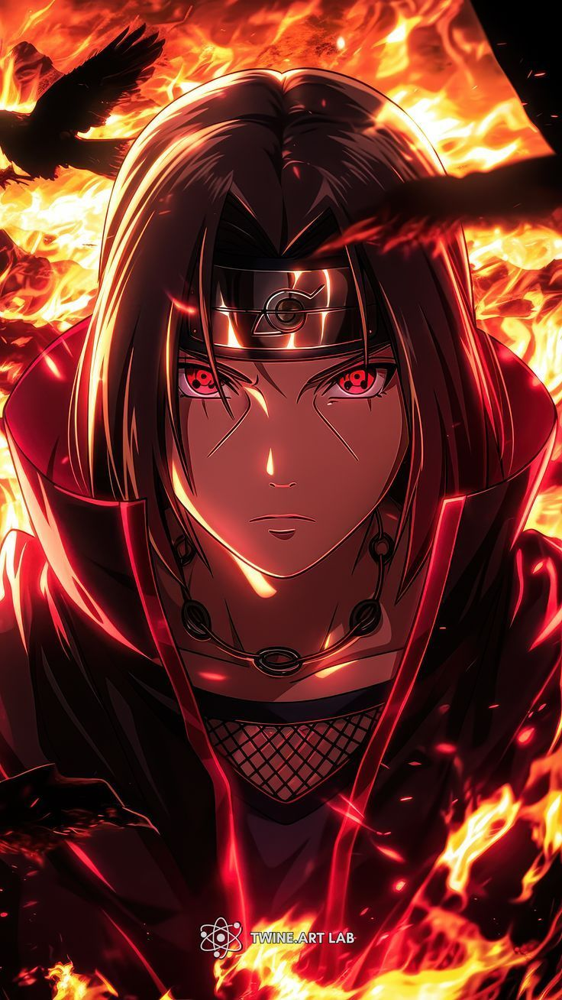

Itachi Uchiha is one of the most iconic and emotionally complex characters in the Naruto anime series...
At a young age, Itachi joined the ANBU Black Ops...
To prevent tragedy, Itachi made the ultimate sacrifice...
After leaving the village, Itachi joined the Akatsuki...
Itachi Uchiha represents sacrifice, loyalty, and peace.